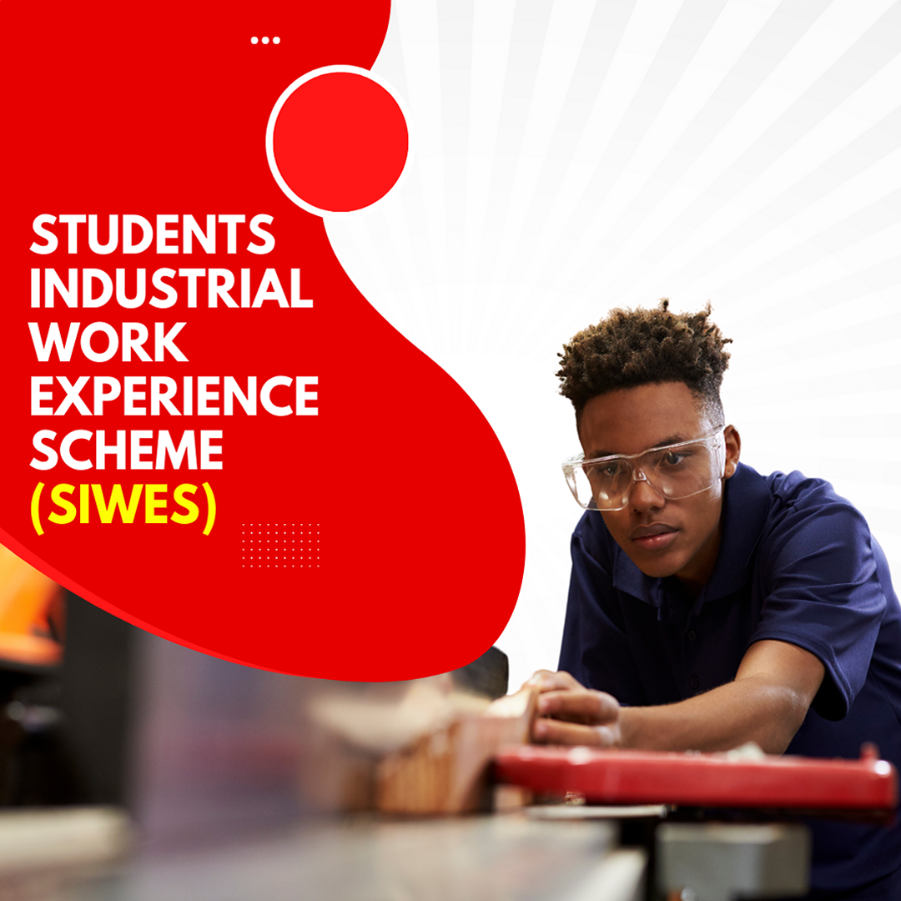
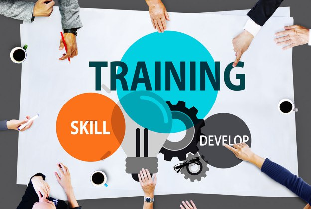

Welcome to KANO STATE POLYTECHNIC, Student Industrial Work and Experience Scheme (SIWES) Portal
All services on this portal are restricted, hence, only authenticated users can access them. Please login Students should use their Registration numbers and passwords when login.
The Students Industrial Work Experience Scheme (SIWES) is a skills training programme designed to expose and prepare students of universities and other tertiary institutions for the Industrial Work situation they are likely to meet after graduation.
What is SIWES
The Students Industrial Work Experience Scheme (SIWES) is a skills training programme designed to expose and prepare students of universities and other tertiary institutions for the Industrial Work situation they are likely to meet after graduation.

The major benefit to students who partake in the SIWES are the skills and competencies acquired. The relevant production skills remain a part of the recipients of industrial training as life-long assets which cannot be taken away from them. This is because the knowledge and skills acquired through training are internalized and become relevant when required to perform jobs.
About SIWES
The student industrial work experience scheme (SIWES) was established by the industrial trust fund (ITF) in 1973 with the aim of exposing students to machines and ways to safeguarding the work areas and workers in the industries, offices, laboratories, hospitals and other organization. The main reason behind the embankments of students in SIWES was to expose them to the industrial environment and enable them to develop occupational competencies so that they can readily contribute their quota to national economic and technological development after graduation.

Benefit of SIWES to students
.jpg)
The major benefit to students who partake in the SIWES are the skills and competencies acquired. The relevant production skills remain a part of the recipients of industrial training as life-long assets which cannot be taken away from them. This is because the knowledge and skills acquired through training are internalized and become relevant when required to perform jobs.
Objectives of SIWES
Skill Development
Provide an avenue for students in institutions of higher learning to acquire industrial skills and experience in their course of study
Practical Knowledge
Expose students to work methods and techniques in handling equipment and machines that may not be available in their institutions.
Corporate Environment
Prepare students for Industrial Work situation they are to meet after graduation. Enlist and strengthen employers’ involvement in the entire educational process.
Field Experience
Provide Students with an opportunity to apply their knowledge in real work situation, thereby bridging the gap between theory and practice.
Please for all enquiries and/or complaints regarding the SIWES Activities Click on Contact Us page or send an email to sot.siwes.edu.ng